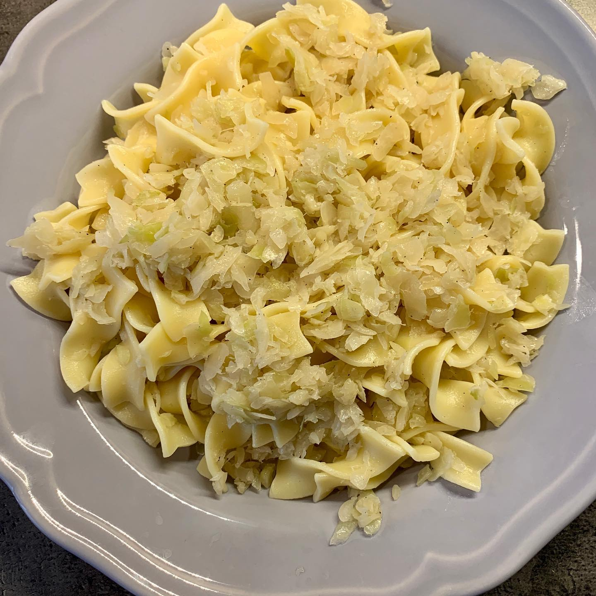

Kapustové fliačky podľa @receptycvr — Normy Jedál
Milujem kapustové fliačky! A preto robím tak, že urobím veľa naraz kapusty a dam zamraziť po porciach . Teraz už pár minút a sú rozmrazene a ostáva len uvariť cestoviny a je to! A vy máte radi toto jedlo? Mám urobiť video ? #kapustovefliacky